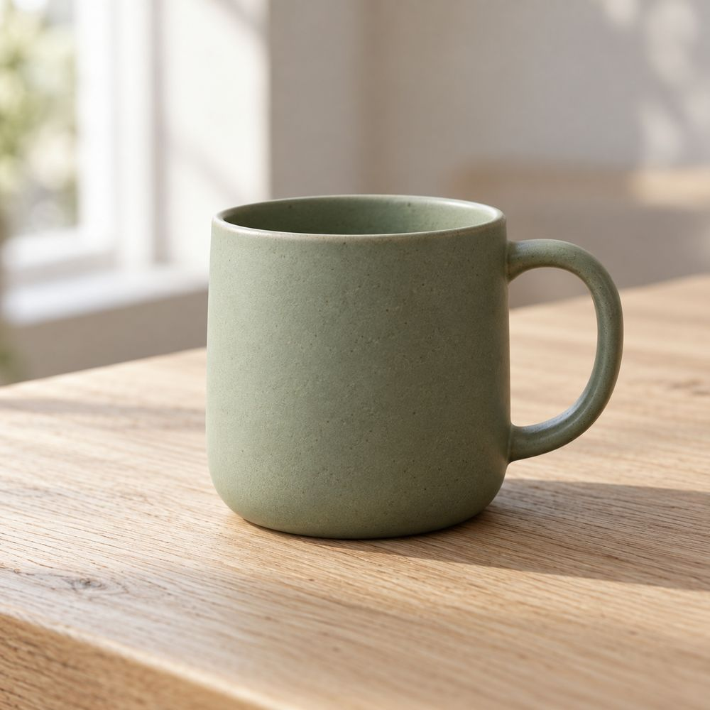
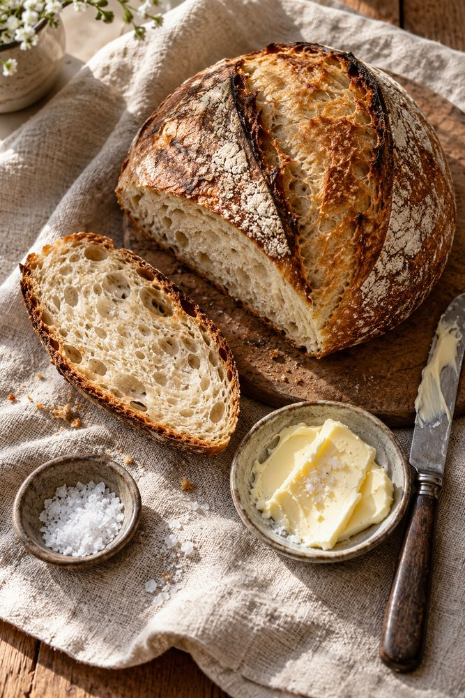
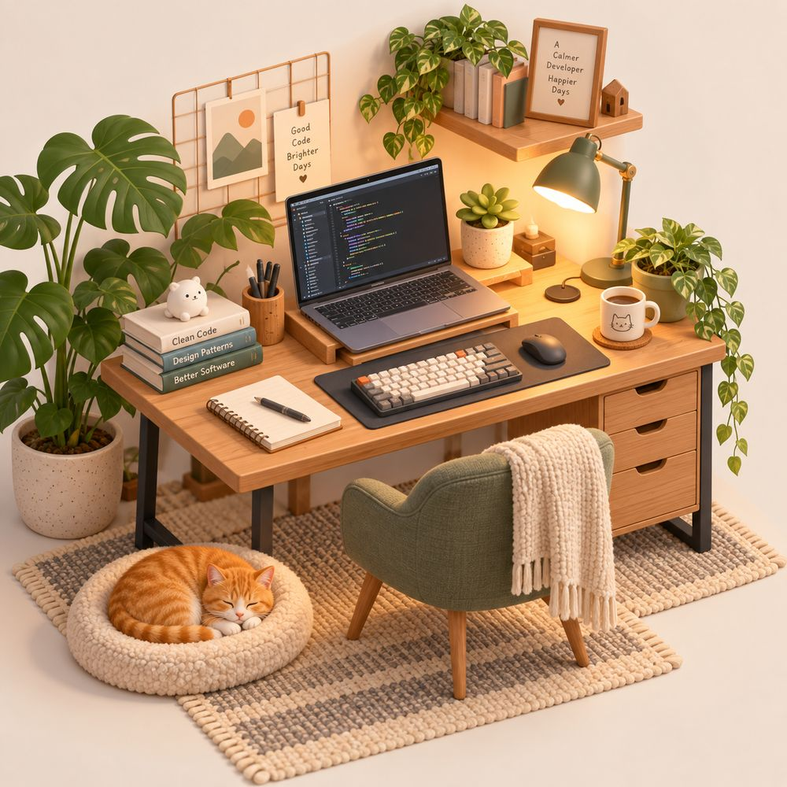
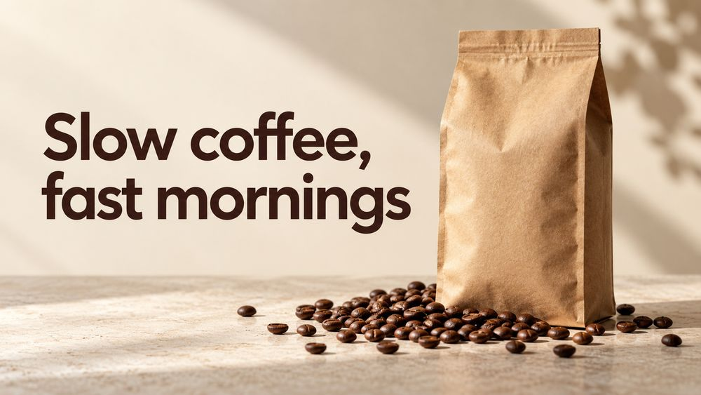
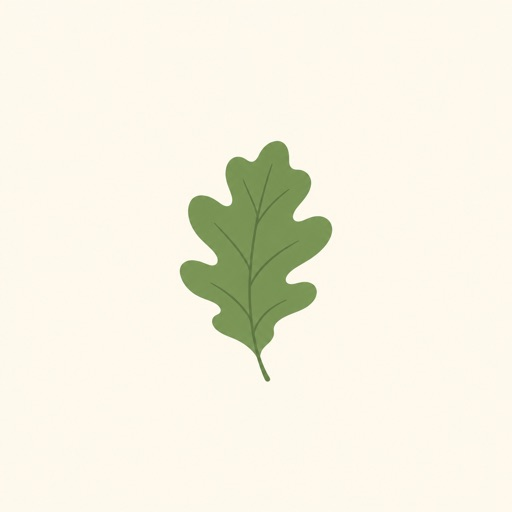

Image generation for Claude Code, powered by GPT Image 2
A free skill that lets Claude create and edit images on your ChatGPT subscription. No API key. One command.

Install the skill in Claude Code
One command installs it globally, for every project. The installer can also set up the Codex CLI and sign you in with ChatGPT.
$ curl -fsSL https://raw.githubusercontent.com/mishagavura/claude-code-image-generation/main/install.sh | bash$ npx -y github:mishagavura/claude-code-image-generation› /plugin marketplace add mishagavura/claude-code-image-generation › /plugin install codex-image@claude-code-image-generation
› Install the skill from https://github.com/mishagavura/claude-code-image-generation globally~/.claude/skills
One project only: add | bash -s -- --project
Restart Claude Code when it finishes
What Claude can make with GPT Image 2
Every image on this page was generated by the skill from the prompt shown under it. No retouching.



Can Claude generate images? Now it can.
Claude can read images but can't create them. This skill hands the drawing to GPT Image 2 through the Codex CLI, and Claude stays in charge of the result.
- You ask in plain English
"Make a hero image for the homepage." Or type
/codex-image. - Claude writes the prompt
Subject, style, framing and exact text, based on your project.
- GPT Image 2 renders it
Through Codex CLI on your ChatGPT plan, in about 30 to 90 seconds.
- Claude checks it and saves it
It looks at the image, retries if something is off, and puts the file where your code needs it.
› make a landscape hero image for the coffee landing page ⏺ Skill(codex-image) ⏺ Bash gen.sh -o public/hero.png -a landscape \ "Website hero for a specialty coffee brand, headline 'Slow coffee, fast mornings' ..." ✓ /app/public/hero.png ⏺ Read public/hero.png Headline spelled correctly, bag and beans on the right, room for the nav. Looks good. ⏺ Saved to public/hero.png and added it to Hero.tsx.
More than text-to-image
Edit the images you already have
Change color, lighting or season, remove objects or swap backgrounds. Only what you ask for changes.

No OpenAI API key
Runs on the ChatGPT plan you already pay for.
Up to 4 variants
Generated in parallel, so you can pick the best one.
Reference images
Match the style or composition of an image you have.
Transparent PNGs
Stickers, cutouts and icons with a real alpha channel.
Saved into your project
Claude puts the file in place and references it in your code.
Saved you an API bill? Leave a star.
It's free and open source. A star takes one click and helps other Claude Code users find it.
FAQ
Can Claude generate images?
Not natively. Claude can read and analyse images but can't create them. With this skill, Claude Code generates and edits images by calling GPT Image 2 (gpt-image-2) through the Codex CLI.
Do I need an OpenAI API key for GPT Image 2?
No. The Codex CLI signs in with your ChatGPT account, so images count against your ChatGPT plan instead of pay-as-you-go API billing.
Is GPT Image 2 free with this?
There's no extra cost beyond your ChatGPT subscription, but each image counts toward your plan's usage limits. When you hit the limit, the skill tells you instead of failing silently.
How do I install skills in Claude Code globally?
A skill is a folder with a SKILL.md file. Put it in ~/.claude/skills/ to use it in every project, or in .claude/skills/ inside one project. The installer above does the global install for you.
Does it work in claude.ai or Claude Desktop chat?
It's built for Claude Code (terminal, desktop app and IDE extensions), which can run local commands. The web chat can't run the Codex CLI.
Which operating systems are supported?
macOS and Linux. On Windows, use WSL. The Codex CLI needs Node.js 18 or newer.